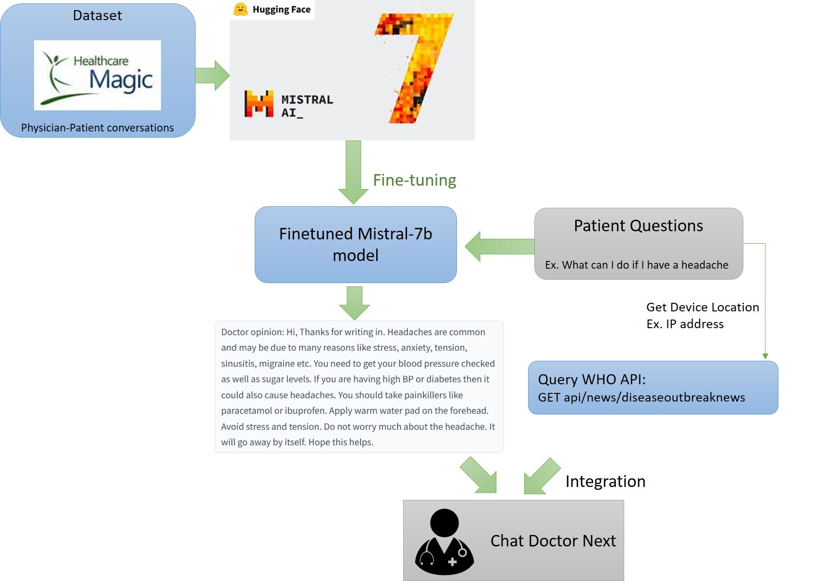

Chat Doctor Next
Fall 2024 CSCI 5541 NLP: Class Project - University of Minnesota
NextGenGenerative
Yi-Ching Ho
Oran Frenstad
Weixuan Lin
the spirit of Haloween
Yi-Ching Ho
Oran Frenstad
Weixuan Lin
the spirit of Haloween
One or two sentences on the motivation behind the problem you are solving. One or two sentences describing the approach you took. One or two sentences on the main result you obtained.
Around the world, everybody needs medical care, and it is hard to provide an adequite amount of care to everybody. While there is an idea to remedy some of this with doctor chat-bots that assist with the process, they are far off from being able eto be used in real settings, such as a prior work called Chat Doctor Our work adds location data to the prompts given to the LLM to try and improve its responses. The idea behind this is to diseased can have different frequencies in different areas, so giving it that locality information may allow it to make more informed predictions.
A figure that conveys the main idea behind the project or the main application being addressed. This figure is from StyLEx.

The process used to train Chat Doctor Next
If you need to explain more about your figure
What did you try to do? What problem did you try to solve? Articulate your objectives using absolutely no jargon.
We added location information into a prior work's LLM for disease diagnosis by passing where the patient is as part of the prompt. This will ideally improve the model's ability to diagnose due to being able to hone in on more common diseases in the area it is diagnosing for
How is it done today, and what are the limits of current practice?
Chat Doctor, the LLM our work is based off of, trained itself on conversations between doctors and patients without location information. They then measured the success using BERTscore. This allowed for general diagnoses, but not those that are region-specific
Who cares? If you are successful, what difference will it make?
If our work is succcessful, the world will be closer to effectively using AI as aids to doctor's. This would make healthcare more accessible and faster, improving quality and quantity
What did you do exactly? How did you solve the problem? Why did you think it would be successful? Is anything new in your approach?
Excepteur sint occaecat cupidatat non proident, sunt in culpa qui officia deserunt mollit anim id est laborum.
What problems did you anticipate? What problems did you encounter? Did the very first thing you tried work?
The biggest setback we have had is the libraries used for Chat Doctor, like we planned to base our work off of, are no longer easily compatible with each other. Our biggest struggle has been, then, getting the code running, as we thought it would be incredibly simple, but it ended up being incredibly difficult. Going forward, we will likely have to continue to make modificaitons in order to get the results similar to Chat Doctor
How did you measure success? What experiments were used? What were the results, both quantitative and qualitative? Did you succeed? Did you fail? Why?
Nemo enim ipsam voluptatem quia voluptas sit aspernatur aut odit aut fugit, sed quia consequuntur magni dolores eos qui ratione voluptatem sequi nesciunt.
| Experiment | 1 | 2 | 3 |
|---|---|---|---|
| Sentence | Example 1 | Example 2 | Example 3 |
| Errors | error A, error B, error C | error C | error B |
How easily are your results able to be reproduced by others? Did your dataset or annotation affect other people's choice of research or development projects to undertake? Does your work have potential harm or risk to our society? What kinds? If so, how can you address them? What limitations does your model have? How can you extend your work for future research?